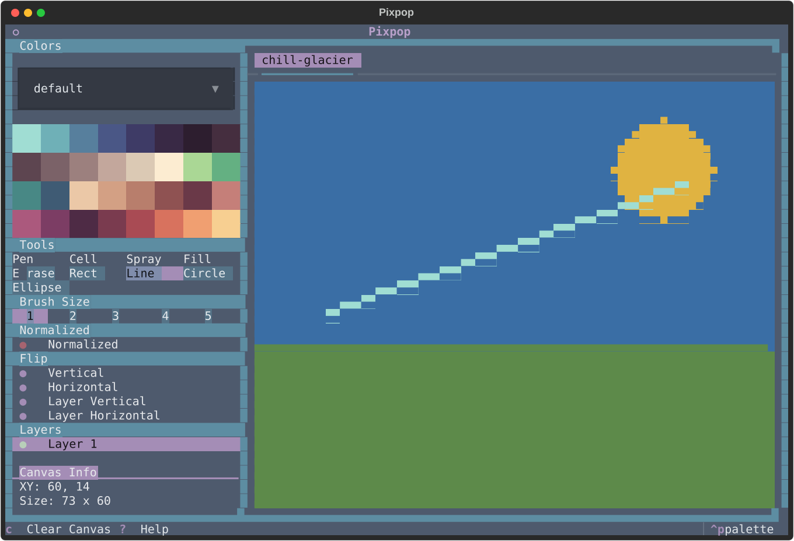

Drawing Tools¶
Pixpop ships with eleven tools, selectable from the tool picker or by cycling with D (next) and A (previous). Hover any tool button to see its tooltip.

Pen¶
Freehand drawing. Click or drag to paint with the current brush size and pen color. This is the default tool.
- Brush size: W / S, sizes 1–5. The brush footprint is anchored at the cursor's top-left pixel: 1 = 1×1 px, 2 = 2×2 px, 3 = 3×3 px, 4 = 4×4 px, 5 = 5×5 px.
- Single-pixel precision: at size 1 the pen paints exactly one pixel. Hold Alt to offset the cursor down by one pixel, painting the bottom half of the cell under the pointer. Also applies to right-click erasing while the pen is active.
Cell¶
Paints a full terminal cell — both of its stacked pixels — in one click or drag. Handy for filling solid blocks without switching brush sizes.
- No brush size: the cell tool always paints exactly one full cell.
- Shifted cells: hold Alt to offset the cursor down by one pixel, painting a cell that straddles the bottom half of the cell under the pointer and the top half of the one below.
Spray¶
Spray-paint effect: each click or drag scatters pixels at random within the brush radius.
- Brush size: W / S, sizes 1–5 (radius of the spray area)
- Density: adjustable via the spray density picker, 1–5
- Supports normalized mode
Fill (paint bucket)¶
Flood-fills the contiguous region under the cursor with the pen color.
Light / Dark¶
Adjust the HSL lightness of already-painted pixels on the active layer: Light raises it, Dark lowers it. Click or drag over painted pixels; transparent pixels are left untouched.
- Brush size: W / S, sizes 1–5
- Step: adjustable via the Light slider, 1–10 (percent of lightness per application). The value is shared by both tools.
- Accumulate: the Accumulate toggle controls what happens when a stroke passes over the same pixel again. On (default) re-applies the step each time, so dragging back and forth progressively lightens or darkens; off adjusts each pixel at most once per stroke.
- Half-cell precision: hold Alt to offset the cursor down by one pixel, adjusting the bottom half of the cell under the pointer.
Eraser¶
Erases pixels back to the transparent background. Behaves like the pen but removes paint instead of adding it.
- Brush size: W / S, sizes 1–5
- Half-cell precision: hold Alt to offset the cursor down by one pixel, erasing from the bottom half of the cell under the pointer.
Line¶
Draws a straight line. Click to set the start, drag to see a live preview, and release to commit.
- Brush size: sizes 1–5
- Supports normalized mode
Rectangle¶
Draws a rectangle outline between the drag start and release points, with live preview.
- Brush size: sizes 1–5 (outline thickness)
Circle¶
Draws a circle. The drag defines a bounding box; the circle is anchored inside it, with live preview.
- Brush size: sizes 1–5
- Supports normalized mode
Ellipse¶
Draws an ellipse inscribed in the drag bounding box, with live preview.
- Brush size: sizes 1–5
- Supports normalized mode
Shape tool tips¶
All shape tools (line, rectangle, circle, ellipse) share the same workflow:
- Mouse down — anchor the shape
- Drag — live preview of the outline
- Release — commit the shape in the pen color
Committing with the right button draws the shape in the background color instead, effectively cutting the shape out of existing paint.
Hold Alt to offset the cursor down by one pixel — the offset applies to both the anchor (mouse down) and the drag end, so the whole shape shifts down to the bottom half of the cell. This also applies when committing with the right button.
Normalized mode¶
Because two pixels share one terminal cell, diagonal strokes can look "steppy". Normalized mode snaps painted pixels to even rows so that strokes made by the line, circle, ellipse, and spray tools form whole characters — producing smoother, more uniform ANSI art.
Toggle it with the Normalized picker in the side panel. It only affects tools that support it.